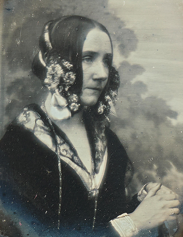

-

1705
Gottfried Wilhelm Leibniz ist der Erfinder des modernen Binärsystems, er veröffentlichte 1703 (in Paris erschienen 1705) seinen Artikel Explication de l’Arithmétique Binaire, in dem er Zahlendarstellung nur mit 0 und 1 erläutert.
-
1820
Charles Babbage hat Anfang der 1820er Jahre die mechanische Difference Engine No. 1 entworfen, die Polynomwerte automatisch berechnen und drucken sollte. Babbage stellte die Idee 1822 bei der Royal Astronomical Society vor. Eine teilweise realisierte Version aus 1832 wurde von Joseph Clement gebaut. Sie gilt als Pionierleistung früherer Rechnertechnik.
-

1843
Ada Lovelace schrieb 1843 die sogenannten Notes zur Beschreibung der Analytical Engine. In Note G formulierte sie einen Algorithmus zur Berechnung der Bernoulli-Zahlen, weithin anerkannt als erstes Computerprogramm der Geschichte, obwohl die Maschine nie gebaut wurde. Sie wird deshalb vielfach als erste Programmiererin bezeichnet.
-
1861
Philipp Reis präsentierte 1861 sein Telefon in Frankfurt, eine frühe Vorrichtung zur Übertragung von Tönen über elektrische Signale. Bell erhält heute meist das Patent, doch Reis Demonstration 1861 gilt als historisch bedeutsam, auch wenn sie nicht zum technisch relavanten Gerät führte.
-
1880
Herman Hollerith entwickelte in den 1880er/1890ern ein Lochkartensystem zur automatisierten Datenverarbeitung. Seine Technik wurde zum erstem mal 1890 bei der US-Volkszählung benutzt.
-

1940
Während des Zweiten Weltkriegs entwickelte Alan Turing die elektromechanische Turing-Bombe, um verschlüsselte Nachrichten der deutschen Enigma systematisch zu entschlüsseln. Die erste Maschine ,,Victory“ kam zum ersten mal 1940 zum Einsatz
-

1941
Konrad Zuse erfand und baute 1941 mit der Z3 den weltweit ersten funktionsfähigen Digitalrechner. Die Maschine wurde am 12. Mai 1941 fertiggestellt. Die Originalmaschine wurde 1943 zerstört und später rekonstruiert. Dann entwarf er 1942–45 Plankalkül, die erste höhere Programmiersprache überhaupt.
-

1945
Die Von-Neumann-Architektur beschreibt einen Computeraufbau mit einer CPU, einem gemeinsamen Speicher für Daten und Programme sowie Ein-/Ausgabewerken. Sie ist die Grundlage für heutige Computer.
-
1946
Der ENIAC (Electronic Numerical Integrator and Computer) wurde 1945 in den USA fertiggestellt und 1946 öffentlich präsentiert. Mit rund 18 000 Vakuumröhren war er der erste voll elektronische Universalrechner und ein Vorbild für viele spätere Systeme.
-
1951
Grace Hopper entwickelte ab 1951 mit A-0 den ersten Compiler, der Programmieranweisungen automatisch in Maschinencode übersetzt.
-
1957
Mit FORTRAN entstand die erste weit verbreitete Programmiersprache. Damit mussten Programmierer nicht mehr direkt in Maschinencode arbeiten. Dies war ein großer Sprung in der Softwareentwicklung.
-
1969
Vier Universitäten in den USA verbanden erstmals ihre Rechner. Dieses Projekt gilt als Geburtsstunde des Internets und legte die Grundlage für weltweite Vernetzung.
-
1970
Die Einführung relationaler Datenbanken revolutionierte die Speicherung und Verarbeitung großer Datenmengen – Grundlage für moderne Informationssysteme, von Banktransaktionen bis zu Suchmaschinen.
-
1989
Das WWW brachte eine benutzerfreundliche Struktur über das Internet – Hypertext, Browser, Links. Es machte das Internet massentauglich und leitete die digitale Gesellschaft ein.
-

2007
Mit der Einführung des iPhones verschmolzen Internet, Computer und Telefon. Smartphones veränderten nicht nur Kommunikation, sondern auch Software-Entwicklung (Apps), Datenverarbeitung in der Cloud und den Zugang zu KI.
-
2022
Die Einführung von ChatGPT von OpenAI im November 2022 war ein Meilenstein in der Geschichte der KI. Damit wurde erstmals ein leistungsfähiger, auf natürlicher Sprache basierender KI-Assistent der breiten Öffentlichkeit zugänglich gemacht. OpenAI, das Unternehmen hinter ChatGPT, wurde 2015 gegründet